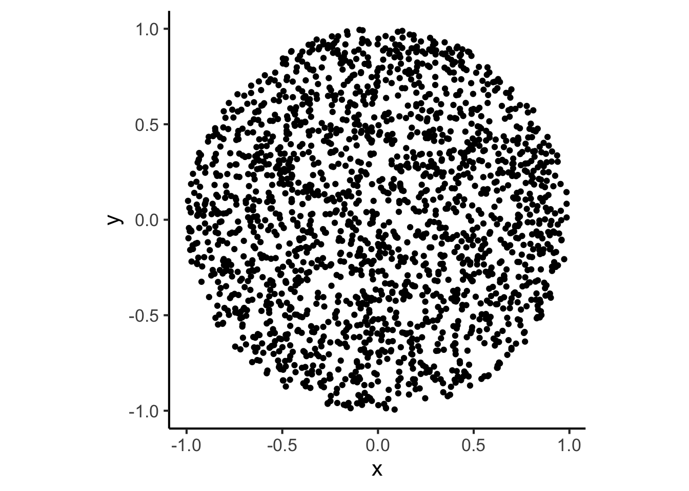

set.seed(5100)
# This just loads some global ggplot settings, you
# can uncomment this if trying to run on your own/on Colab
source("../../dsan-globals/_globals.r")Deriving a pdf from Scratch
Extra Writeups
Setting Random Seed
(At the beginning of code where you’re dealing with distributions, make sure you set the random seed to 5100, or at least some constant value, to make sure results are reproducible across different computers at different times)
On the Lab 5 Assignment, I think a lot of students might be wrestling with what’s “going on” on Problem 1, so I wanted to make a quick writeup with some intuition around where to start on this problem.
Whereas in Problem 2 you are given a CDF (there are unknown variables, but you have something concrete to start “doing math” with), in Problem 1 it may seem at first like you don’t have enough information to complete the problem, since you only have information about a constraint on the possible values that \(X\) and \(Y\) can take on, rather than (e.g.) the actual probability density that the pdf \(f_{X,Y}(x,y)\) should take on.
In reality, though, that’s part of the difficulty of the problem: namely, how to derive a valid pdf from only these tiny scraps of information!
Necessary vs. Sufficient Conditions
Before we start, in case the distinction between necessary and sufficient conditions isn’t something you’ve learned before:
- If [a predicate] \(p\) is necessary for [a predicate] \(q\), then if we know \(p\) is false then \(q\) must be false.
- For example, let \(p = [x > 3]\) and \(q = [x > 5]\).
- Then \(p\) is a necessary condition for \(q\), because in this case if we know that \(p\) is false \(q\) must also be false.
- Note that the converse does not hold! That is, knowing that \(p\) is true does not tell us that \(q\) is true: if we know \(p\) (so we know that \(x > 3\)), we still don’t know \(q\), since we could have e.g. \(x = 4\).
- If \(p\) is sufficient for \(q\), then if we know \(p\) is true we also know that \(q\) is true.
- For example, let \(p = [x\text{ is divisible by }4]\) and \(q = [x\text{ is even}]\)
- Then \(p\) is a sufficient condition for \(q\), since all numbers divisible by 4 are also even.
- Again you have to be careful, because the converse does not hold: knowing that \(q\) is false in this example does not tell us that \(p\) is false: if we know \(\neg q\), we know \(x\) is not divisible by 4, but \(p\) can still be true, since e.g. \(x\) could be 6 (an even number not divisible by 4).
I think keeping this in mind is helpful for this specific problem, because we can think about the following two necessary conditions that must hold for a given function \(f_Z(v)\) to represent a valid pdf for the random variable \(Z\).
Going from Single-Valued to Multi-Valued pdfs
I use \(Z\) to define the pdf \(f_Z(v)\) here to emphasize how pdfs are (at their core) defined for single random variables like \(X\), \(Y\), or \(Z\).
Nonetheless, as we enter into multivariable probability world we can consider \(f_Z(v)\) as the pdf for a vector-valued random variable \(Z\), so that \(Z\) can in fact represent a point that is decomposable into an \(x\)-coordinate (represented by a random variable \(X\)) and a \(y\)-coordinate (represented by a random variable \(Y\)). In this case, we can rewrite \(Z\) as \((X,Y)\) and call our pdf \(f_{(X,Y)}(v_X, x_Y)\), which for succinctness we usually shorten to just \(f_{X,Y}(x,y)\).
Two Necessary Conditions for a Valid pdf Which Are Jointly Sufficient
Given the above definitions+examples of necessary vs. sufficient conditions, here (if we call the first condition \(NC_1\) and the second \(NC_2\)) they are individually necessary but jointly sufficient: meaning that if we define a new condition \(B\) for “both”, such that \(B = (NC_1 \wedge NC_2)\), then \(B\) is in fact a sufficient condition for \(f\) to be a valid pdf. If we can ensure that both of the necessary conditions given below are true, then we know that our function \(f_Z\) defines a valid pdf for a random variable \(Z\).
- Necessary Condition 1 (\(NC_1\), Single-Variable): The integral of the pdf \(f_Z(v)\) over \(\mathcal{R}_Z\) (where \(\mathcal{R}_Z\) is the support of \(Z\)) must equal 1.
- Necessary Condition 1 (\(NC_1\), Multi-Value): The double-integral of the pdf \(f_{X,Y}(x,y)\) over \(\mathcal{R}_X\) and \(\mathcal{R}_Y\) must equal 1.
- Necessary Condition 2 (\(NC_2\), Single-Value): If \(Z\) is defined over a range \([a, b]\), then the pdf \(f_Z\) must assign nonzero probability density to all non-empty one-dimensional intervals of radius \(\varepsilon\) around \(v \in [a,b]\), and zero probability density to all other intervals.
- Necessary Condition 2 (\(NC_2\), Multi-Value): If \(X\) is defined over a range \([a_X, b_X]\) and \(Y\) is defined over a range \([a_Y, b_Y]\), then the pdf \(f_{X,Y}\) must assign nonzero probability density to all non-empty two-dimensional circles of radius \(\varepsilon\) around points \(\{ (x,y) \mid x \in [a_X,b_X]\text{ and }y \in [a_Y,b_Y]\}\).
I know Necessary Condition 2 is extremely scary-looking and confusing, but it is mainly that way to handle extremely “weird” cases where we’d like to define probability distributions over bizarre sets like the Sierpiński triangle.
Since in Problem 1 on the Lab Assignment we are working with a nicely-behaved set (the set that you plotted in part 1, which is just a triangle taking up the bottom 1/2 of the unit square), we can transform Necessary Condition 2 into a much more intuitive version
- Necessary Condition 2 (\(NC_2\), RVs Defined over “Well-Behaved” Spaces): If \(X\) is defined over a range \([a_X, b_X]\) and \(Y\) is defined over a range \([a_Y, b_Y]\), then the pdf \(f_{X,Y}\) must assign nonzero probability density to all points \(\{(x,y) \mid x \in [a_X,b_X]\text{ and }y \in [a_Y,b_Y]\}\).
If the difference between the “well-behaved” case and the general case above is not clear, compare the definitions closely (in the “simplified version” just given, we don’t have to worry about circles around points, just points themselves).
Why Are You Telling Us All This? How Does It Help Solve Problem 1?
If you’ve made it all the way to this point, you may be frustrated that I still haven’t pointed exactly to how these two conditions help us solve Problem 1.
Since I can’t give away the solution for that particular problem, here I will show the applicability of these two conditions to a similar problem, and then your job is to think about how the way I work through this problem can help you work through problem 1.
The example problem: Given two random variables \(X \sim \mathcal{U}[0,1]\) and \(Y \sim \mathcal{U}[0,1]\), consider the joint distribution of the vector-valued random variable \(Z = (X,Y)\), where the possible realizations of \(Z\) are restricted to only those values of \(X\) and \(Y\) such that they lie within a circle of radius \(1\) around the origin: that is, \(X^2 + Y^2 < 1\). This means that we could create a plot which “fills in” the possible values of \(Z\) more and more as we sample more points, by generating values of \(X\) sampled from from \(\mathcal{U}[0,1]\) and values of \(Y\) sampled from \(\mathcal{U}[0,1]\), then placing the points on the plot if they are “admissible” (if they form a valid realization of \(Z\)) and throwing the points away otherwise:
library(tidyverse)
N <- 2500
x_vals <- runif(N, -1, 1)
y_vals <- runif(N, -1, 1)
sample_df <- tibble(x=x_vals, y=y_vals)
sample_df <- sample_df |>
mutate(
admissible = x^2 + y^2 < 1
)
sample_df |> head()| x | y | admissible |
|---|---|---|
| 0.0853844 | 0.4159406 | TRUE |
| -0.4991692 | -0.6671818 | TRUE |
| -0.5449181 | 0.9697597 | FALSE |
| -0.2142207 | -0.8855359 | TRUE |
| 0.8015973 | 0.2324585 | TRUE |
| -0.6283825 | -0.0055527 | TRUE |
We see that, given how admissible is defined, plotting only the points for which admissible == TRUE will mean that we are “filling out” the subset of all possible values in the square \([-1,1] \times [-1,1]\) that satisfy our contstraint:
admissible_df <- sample_df |>
filter(admissible)
ggplot(admissible_df, aes(x=x, y=y)) +
geom_point() +
dsan_theme() +
# If you were wondering how to make it an actual perfect circle
coord_fixed()
And now we can finally use our two necessary conditions, albeit in reverse order:
Applying Necessary Condition 2 (Simplified Version) To This Case:
To satisfy this condition, let’s literally just define a pdf \(f_{X,Y}\) that has some non-zero value \(c\) for points within the circle in the above plot, and has value \(0\) otherwise:
\[ f_{X,Y}(x,y) = \begin{cases} c &\text{if }x^2 + y^2 < 1, \\ 0 &\text{otherwise.} \end{cases} \]
So far, we’ve satisfied Necessary Condition 1 (\(NC_1\)) for \(f_{X,Y}\) to be a valid pdf. Now if we can figure out how to also make this function satisfy Necessary Condition 2 (\(NC_2\)), we’ll know that we have a valid pdf for \(Z = (X,Y)\).
Applying Necessary Condition 1 To This Case
Given that \(X\) and \(Y\) are both defined (in a nicely-behaved way) over the range \([-1,1]\), the remaining condition \(NC_1\) is satisfied if the following equality holds:
\[ \int_{-1}^{1}\int_{-1}^{1}f_{X,Y}(x,y)dxdy = 1 \tag{1}\]
If you calculate these two definite integrals (you could do it using fancy math, like variable substitution, or just using geometry, e.g. by thinking about what the integral would be given what you know about the areas of circles), you will find that this integral-filled equality reduces to the equality
\[ c\pi = 1 \]
So that, finally, we can solve for the value of \(c\) which now lets us “fill in this detail”: that if we choose \(c = \frac{1}{\pi}\), so that
\[ f_{X,Y}(x,y) = \begin{cases} \frac{1}{\pi} &\text{if }x^2 + y^2 < 1, \\ 0 &\text{otherwise.} \end{cases} \]
then we get a nice chain of realizations:
- The equality Equation 1 holds, so
- We have satisfied \(NC_1\), after already satisfying \(NC_2\) above, so
- We have now satisfied both \(NC_1\) and \(NC_2\),
- This means we have satisfied \(B\), so that finally
- We have defined a valid pdf \(f_{X,Y}(x,y)\) (since \(B\) is a sufficient condition for valid pdfs).
I hope that helps somewhat: I wrote things out in excruciating detail, using necessary and sufficient conditions and etc., to try and show how there is a general logic to these types of problems (or at least, a general logic for how we can use the information we’re given to construct a distribution which encodes this information).